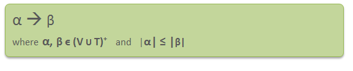
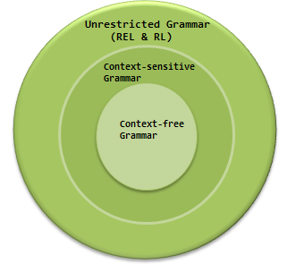

Context-Sensitive Grammar –
A Context-sensitive grammar is an Unrestricted grammar in which all the productions are of form –

Where α and β are strings of non-terminals and terminals.
Context-sensitive grammars are more powerful than context-free grammars because there are some languages that can be described by CSG but not by context-free grammars and CSL are less powerful than Unrestricted grammar. That’s why context-sensitive grammars are positioned between context-free and unrestricted grammars in the Chomsky hierarchy.

Context-sensitive grammar has 4-tuples. G = {N, Σ, P, S}, Where
N = Set of non-terminal symbols
Σ = Set of terminal symbols
S = Start symbol of the production
P = Finite set of productions
All rules in P are of the form α1 A α2 –> α1 β α2
Context-sensitive Language: The language that can be defined by context-sensitive grammar is called CSL. Properties of CSL are :
- Union, intersection and concatenation of two context-sensitive languages is context-sensitive.
- Complement of a context-sensitive language is context-sensitive.
Example –
Consider the following CSG.
S → abc/aAbc
Ab → bA
Ac → Bbcc
bB → Bb
aB → aa/aaA
What is the language generated by this grammar?
Solution:
S → aAbc
→ abAc
→ abBbcc
→ aBbbcc
→ aaAbbcc
→ aabAbcc
→ aabbAcc
→ aabbBbccc
→ aabBbbccc
→ aaBbbbccc
→ aaabbbccc
The language generated by this grammar is {anbncn | n≥1}.
GATE CS Corner Questions
Practicing the following questions will help you test your knowledge. All questions have been asked in GATE in previous years or in GATE Mock Tests. It is highly recommended that you practice them.
References –
CSG – Wikipedia
CSG – csa.iisc.ernet.in